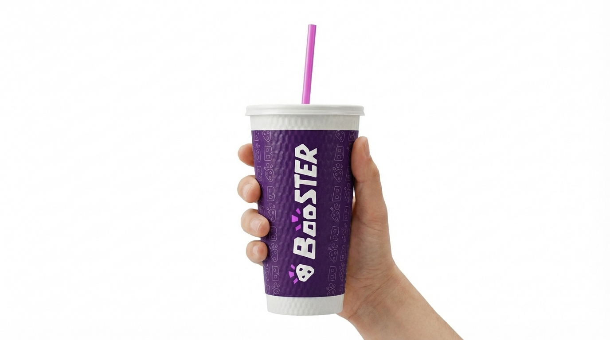

The Diagnostic
Analysis of the original brand revealed a disconnect between its 1999 vibrant-aesthetic and the modern consumer's expectation for functional wellness, ingredient transparency, and system-aware convenience.

Strategic foundations and technical development for the Booster Source identity.
The "Booster Source" project is a strategic rebranding initiative designed by Mitchell Pretak to evolve Booster Juice from a legacy "smoothie shop" into a premium, transparent, and routine-ready daily nourishment system.
The Diagnostic
Analysis of the original brand revealed a disconnect between its 1999 vibrant-aesthetic and the modern consumer's expectation for functional wellness, ingredient transparency, and system-aware convenience.
The Four Pillars
The identity is built on four core strategic pillars: Daily Nourishment (routine-led), Supply & Sourcing (visibility), Responsible Operations (measurable progress), and Social Stewardship (local impact).
The visual direction was established through rigorous sketching and iterative studies, including an alternate identity direction under the "Booster Source" sketch exploration which prioritized geometric minimalism and high-contrast typography.
This brand guidelines platform was designed and built as a web-native application to showcase the brand's digital-first philosophy. It prioritizes high-fidelity rendering and system-aware interactions.
AI Pair Programming
Developed with Antigravity
Developed in collaboration with Antigravity, a powerful agentic AI coding assistant designed by Google DeepMind. This allowed for rapid iteration of complex CSS architectures and JavaScript custom components.
Premium Design System
High-Fidelity Materiality
Built using HTML5, Vanilla JavaScript, and advanced CSS properties. The "frosted glass" effects use a proprietary 10-layer backdrop-filter stack for consistent cross-browser progressive blurring.
Continuous Deployment
Git & Vercel Ops
Managed via version control in Git and deployed through Vercel to a custom playgrounds site, ensuring the guidelines are always live, responsive, and platform-aligned.
Generative AI tools were used critically in the development of this Strategic Branding project. All outputs were directed, selected, and critically evaluated by the author, Mitchell Pretak.
Research & Strategy
OpenAI ChatGPT (GPT-4o/5.4 Private Beta) was used for research structuring, ecosystem/stakeholder mapping, strategic writing support, and code-assisted diagram construction.
Visual Generation
Google Gemini (Chat, Flow, Whisk) was used for image generation, campaign visualization, and interface ideation based on student-directed prompts and references.
UI Ideation
Google Stitch was utilized to generate rough UI concepts for homepage and in-app ordering screens, serving as drafts for final refinement.
Asset Collection
Pomelli supported the collection of core brand assets and visual elements, as well as AI-assisted exploration of campaign concepts.
The architectural logic and editorial presentation of these guidelines take inspiration from leading design systems that prioritize structural clarity and high-fidelity documentation.
DevRev Guidelines
Benchmark for modern, high-fidelity design systems that decomplicate intricate platforms into simple, intentional layouts.
Netflix Brand Site
Benchmark for editorial storytelling and brand consistency across diverse partner touchpoints and high-contrast digital interfaces.
Instacart Identity
Benchmark for the duality of efficiency and delight (Shop+Savor), using warm photography and dynamic Illustration systems.
Klarna Design System
Benchmark for "Bubble" materiality and strikingly relevant UI that balances bold aesthetic "offbeat" shifts with functional precision.
Starbucks Brand Guides
Benchmark for systematic brand optimism, calm confidence, and strict guidelines for preserving iconic identifiers across global markets.